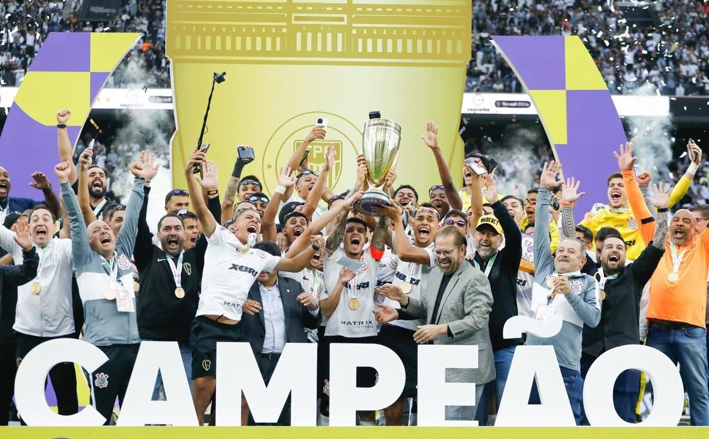

Corinthians
Olá nesse site ira apresenta diversas informações sobre sport Clud Corinthians Paulista sua historia suas fases e títulos durante 112 anos de grande felicidade. Um clube grandioso e cheio de vitorias e goleadas históricas para saber mais e conhecer esse amado clube arraste para baixo.

1910 A fundação
Às 20h30 do dia 1º de setembro, à luz de um lampião, na esquina das ruas José Paulino e Cônego Martins, no bairro do Bom Retiro, o grupo de operários formado por Anselmo Corrêa, Antônio Pereira, Carlos Silva, Joaquim Ambrósio e Raphael Perrone fundaram o Sport Club Corinthians Paulista.Para saber mais da fundação clique em"leia mais".
Leia mais...
Lista de conquistas
2 Mundiais de Clubes da FIFA - 2000 e 2012
1 CONMEBOL Libertadores - 2012
1 Recopa Sul-Americana - 2013
7 Campeonatos Brasileiros - 1990, 1998, 1999, 2005, 2011, 2015 e 2017
3 Copas do Brasil - 1995, 2002 e 2009.
para saber mais conquistas do timão clique em"leia mais".
Leia mais...
Video da torcida do Corinthians
Leia mais...
Camisas do timão
Leia mais...